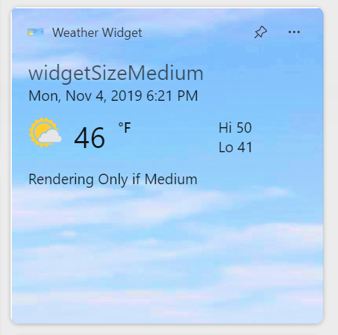
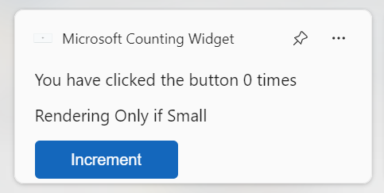
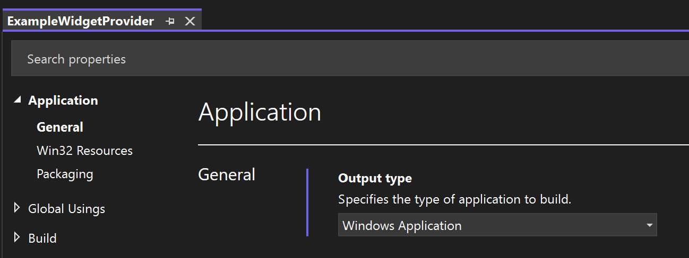
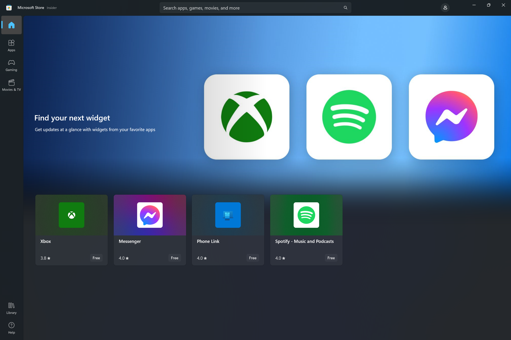
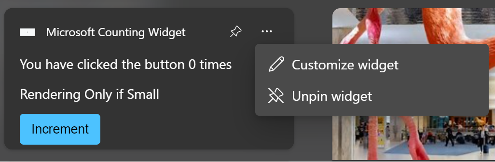
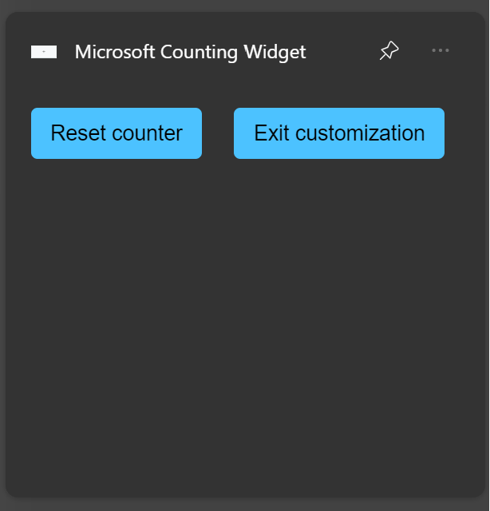

Implement a widget provider in a C# Windows App
This article walks you through creating a simple widget provider that implements the IWidgetProvider interface. The methods of this interface are invoked by the widget host to request the data that defines a widget or to let the widget provider respond to a user action on a widget. Widget providers can support a single widget or multiple widgets. In this example, we will define two different widgets. One widget is a mock weather widget that illustrates some of the formatting options provided by the Adaptive Cards framework. The second widget will demonstrate user actions and the custom widget state feature by maintaining a counter that is incremented whenever the user clicks on a button displayed on the widget.


This sample code in this article is adapted from the Windows App SDK Widgets Sample. To implement a widget provider using C++/WinRT, see Implement a widget provider in a win32 app (C++/WinRT).
Prerequisites
- Your device must have developer mode enabled. For more information see Enable your device for development.
- Visual Studio 2022 or later with the Universal Windows Platform development workload. Make sure to add the component for C++ (v143) from the optional dropdown.
Create a new C# console app
In Visual Studio, create a new project. In the Create a new project dialog, set the language filter to "C#" and the platform filter to Windows, then select the Console App project template. Name the new project "ExampleWidgetProvider". When prompted, set the target .NET version to 8.0.
When the project loads, in Solution Explorer right-click the project name and select Properties. On the General page, scroll down to Target OS and select "Windows". Under Target OS Version, select version 10.0.19041.0 or later.
To update your project to support .NET 8.0, in Solution Explorer right-click the project name and select Edit Project File. Inside of PropertyGroup, add the following RuntimeIdentifiers element.
<RuntimeIdentifiers>win-x86;win-x64;win-arm64</RuntimeIdentifiers>
Note that this walkthrough uses a console app that displays the console window when the widget is activated to enable easy debugging. When you are ready to publish your widget provider app, you can convert the console application to a Windows application by following the steps in Convert your console app to a Windows app.
Add references to the Windows App SDK
This sample uses the latest stable Windows App SDK NuGet package. In Solution Explorer, right-click Dependencies and select Manage NuGet packages.... In the NuGet package manager, select the Browse tab and search for "Microsoft.WindowsAppSDK". Select the latest stable version in the Version drop-down and then click Install.
Add a WidgetProvider class to handle widget operations
In Visual Studio, right-click the ExampleWidgetProvider project in Solution Explorer and select Add->Class. In the Add class dialog, name the class "WidgetProvider" and click Add. In the generated WidgetProvider.cs file, update the class definition to indicate that it implements the IWidgetProvider interface.
// WidgetProvider.cs
internal class WidgetProvider : IWidgetProvider
Prepare to track enabled widgets
A widget provider can support a single widget or multiple widgets. Whenever the widget host initiates an operation with the widget provider, it passes an ID to identify the widget associated with the operation. Each widget also has an associated name and a state value that can be used to store custom data. For this example, we'll declare a simple helper structure to store the ID, name, and data for each pinned widget. Widgets also can be in an active state, which is discussed in the Activate and Deactivate section below, and we will track this state for each widget with a boolean value. Add the following definition to the WidgetProvider.cs file, inside the ExampleWidgetProvider namespace, but outside of the WidgetProvider class definition.
// WidgetProvider.cs
public class CompactWidgetInfo
{
public string? widgetId { get; set; }
public string? widgetName { get; set; }
public int customState = 0;
public bool isActive = false;
}
Inside the WidgetProvider class definition in WidgetProvider.cs, add a member for the map that will maintain the list of enabled widgets, using the widget ID as the key for each entry.
// WidgetProvider.cs
// Class member of WidgetProvider
public static Dictionary<string, CompactWidgetInfo> RunningWidgets = new Dictionary<string, CompactWidgetInfo>();
Declare widget template JSON strings
This example will declare some static strings to define the JSON templates for each widget. For convenience, these templates are stored in the member variables of the WidgetProvider class. If you need a general storage for the templates - they can be included as part of the application package: Accessing Package Files. For information on creating the widget template JSON document, see Create a widget template with the Adaptive Card Designer.
In the latest release, apps that implement Windows widgets can customize the header that is displayed for their widget in the Widgets Board, overriding the default presentation. For more information, see Customize the widget header area.
Note
In the latest release, apps that implement Windows widgets can choose to populate the widget content with HTML served from a specified URL instead of supplying content in the Adaptive Card schema format in the JSON payload passed from the provider to the Widgets Board. Widget providers must still provide an Adaptive Card JSON payload, so the implementation steps in this walkthrough are applicable to web widgets. For more information, see Web widget providers.
// WidgetProvider.cs
// Class members of WidgetProvider
const string weatherWidgetTemplate = """
{
"$schema": "http://adaptivecards.io/schemas/adaptive-card.json",
"type": "AdaptiveCard",
"version": "1.0",
"speak": "<s>The forecast for Seattle January 20 is mostly clear with a High of 51 degrees and Low of 40 degrees</s>",
"backgroundImage": "https://messagecardplayground.azurewebsites.net/assets/Mostly%20Cloudy-Background.jpg",
"body": [
{
"type": "TextBlock",
"text": "Redmond, WA",
"size": "large",
"isSubtle": true,
"wrap": true
},
{
"type": "TextBlock",
"text": "Mon, Nov 4, 2019 6:21 PM",
"spacing": "none",
"wrap": true
},
{
"type": "ColumnSet",
"columns": [
{
"type": "Column",
"width": "auto",
"items": [
{
"type": "Image",
"url": "https://messagecardplayground.azurewebsites.net/assets/Mostly%20Cloudy-Square.png",
"size": "small",
"altText": "Mostly cloudy weather"
}
]
},
{
"type": "Column",
"width": "auto",
"items": [
{
"type": "TextBlock",
"text": "46",
"size": "extraLarge",
"spacing": "none",
"wrap": true
}
]
},
{
"type": "Column",
"width": "stretch",
"items": [
{
"type": "TextBlock",
"text": "°F",
"weight": "bolder",
"spacing": "small",
"wrap": true
}
]
},
{
"type": "Column",
"width": "stretch",
"items": [
{
"type": "TextBlock",
"text": "Hi 50",
"horizontalAlignment": "left",
"wrap": true
},
{
"type": "TextBlock",
"text": "Lo 41",
"horizontalAlignment": "left",
"spacing": "none",
"wrap": true
}
]
}
]
}
]
}
""";
const string countWidgetTemplate = """
{
"type": "AdaptiveCard",
"body": [
{
"type": "TextBlock",
"text": "You have clicked the button ${count} times"
},
{
"text":"Rendering Only if Small",
"type":"TextBlock",
"$when":"${$host.widgetSize==\"small\"}"
},
{
"text":"Rendering Only if Medium",
"type":"TextBlock",
"$when":"${$host.widgetSize==\"medium\"}"
},
{
"text":"Rendering Only if Large",
"type":"TextBlock",
"$when":"${$host.widgetSize==\"large\"}"
}
],
"actions": [
{
"type": "Action.Execute",
"title": "Increment",
"verb": "inc"
}
],
"$schema": "http://adaptivecards.io/schemas/adaptive-card.json",
"version": "1.5"
}
""";
Implement the IWidgetProvider methods
In the next few sections, we'll implement the methods of the IWidgetProvider interface. The helper method UpdateWidget that is called in several of these method implementations will be shown later in this article.
Note
Objects passed into the callback methods of the IWidgetProvider interface are only guaranteed to be valid within the callback. You should not store references to these objects because their behavior outside of the context of the callback is undefined.
CreateWidget
The widget host calls CreateWidget when the user has pinned one of your app's widgets in the widget host. First, this method gets the ID and name of the associated widget and adds a new instance of our helper structure, CompactWidgetInfo, to the collection of enabled widgets. Next, we send the initial template and data for the widget, which is encapsulated in the UpdateWidget helper method.
// WidgetProvider.cs
public void CreateWidget(WidgetContext widgetContext)
{
var widgetId = widgetContext.Id; // To save RPC calls
var widgetName = widgetContext.DefinitionId;
CompactWidgetInfo runningWidgetInfo = new CompactWidgetInfo() { widgetId = widgetId, widgetName = widgetName };
RunningWidgets[widgetId] = runningWidgetInfo;
// Update the widget
UpdateWidget(runningWidgetInfo);
}
DeleteWidget
The widget host calls DeleteWidget when the user has unpinned one of your app's widgets from the widget host. When this occurs, we will remove the associated widget from our list of enabled widgets so that we don't send any further updates for that widget.
// WidgetProvider.cs
public void DeleteWidget(string widgetId, string customState)
{
RunningWidgets.Remove(widgetId);
if(RunningWidgets.Count == 0)
{
emptyWidgetListEvent.Set();
}
}
For this example, in addition to removing the widget with the specified from the list of enabled widgets, we also check to see if the list is now empty, and if so, we set an event that will be used later to allow the app to exit when there are no enabled widgets. Inside your class definition, add the declaration of the ManualResetEvent and a public accessor function.
// WidgetProvider.cs
static ManualResetEvent emptyWidgetListEvent = new ManualResetEvent(false);
public static ManualResetEvent GetEmptyWidgetListEvent()
{
return emptyWidgetListEvent;
}
OnActionInvoked
The widget host calls OnActionInvoked when the user interacts with an action you defined in your widget template. For the counter widget used in this example, an action was declared with a verb value of "inc" in the JSON template for the widget. The widget provider code will use this verb value to determine what action to take in response to the user interaction.
...
"actions": [
{
"type": "Action.Execute",
"title": "Increment",
"verb": "inc"
}
],
...
In the OnActionInvoked method, get the verb value by checking the Verb property of the WidgetActionInvokedArgs passed into the method. If the verb is "inc", then we know we are going to increment the count in the custom state for the widget. From the WidgetActionInvokedArgs, get the WidgetContext object and then the WidgetId to get the ID for the widget that is being updated. Find the entry in our enabled widgets map with the specified ID and then update the custom state value that is used to store the number of increments. Finally, update the widget content with the new value with the UpdateWidget helper function.
// WidgetProvider.cs
public void OnActionInvoked(WidgetActionInvokedArgs actionInvokedArgs)
{
var verb = actionInvokedArgs.Verb;
if (verb == "inc")
{
var widgetId = actionInvokedArgs.WidgetContext.Id;
// If you need to use some data that was passed in after
// Action was invoked, you can get it from the args:
var data = actionInvokedArgs.Data;
if (RunningWidgets.ContainsKey(widgetId))
{
var localWidgetInfo = RunningWidgets[widgetId];
// Increment the count
localWidgetInfo.customState++;
UpdateWidget(localWidgetInfo);
}
}
}
For information about the Action.Execute syntax for Adaptive Cards, see Action.Execute. For guidance about designing interaction for widgets, see Widget interaction design guidance
OnWidgetContextChanged
In the current release, OnWidgetContextChanged is only called when the user changes the size of a pinned widget. You can choose to return a different JSON template/data to the widget host depending on what size is requested. You can also design the template JSON to support all the available sizes using conditional rendering based on the value of host.widgetSize. If you don't need to send a new template or data to account for the size change, you can use the OnWidgetContextChanged for telemetry purposes.
// WidgetProvider.cs
public void OnWidgetContextChanged(WidgetContextChangedArgs contextChangedArgs)
{
var widgetContext = contextChangedArgs.WidgetContext;
var widgetId = widgetContext.Id;
var widgetSize = widgetContext.Size;
if (RunningWidgets.ContainsKey(widgetId))
{
var localWidgetInfo = RunningWidgets[widgetId];
UpdateWidget(localWidgetInfo);
}
}
Activate and Deactivate
The Activate method is called to notify the widget provider that the widget host is currently interested in receiving updated content from the provider. For example, it could mean that the user is currently actively viewing the widget host. The Deactivate method is called to notify the widget provider that the widget host is no longer requesting content updates. These two methods define a window in which the widget host is most interested in showing the most up-to-date content. Widget providers can send updates to the widget at any time, such as in response to a push notification, but as with any background task, it's important to balance providing up-to-date content with resource concerns like battery life.
Activate and Deactivate are called on a per-widget basis. This example tracks the active status of each widget in the CompactWidgetInfo helper struct. In the Activate method, we call the UpdateWidget helper method to update our widget. Note that the time window between Activate and Deactivate may be small, so it's recommended that you try to make your widget update code path as quick as possible.
// WidgetProvider.cs
public void Activate(WidgetContext widgetContext)
{
var widgetId = widgetContext.Id;
if (RunningWidgets.ContainsKey(widgetId))
{
var localWidgetInfo = RunningWidgets[widgetId];
localWidgetInfo.isActive = true;
UpdateWidget(localWidgetInfo);
}
}
public void Deactivate(string widgetId)
{
if (RunningWidgets.ContainsKey(widgetId))
{
var localWidgetInfo = RunningWidgets[widgetId];
localWidgetInfo.isActive = false;
}
}
Update a widget
Define the UpdateWidget helper method to update an enabled widget. In this example, we check the name of the widget in the CompactWidgetInfo helper struct passed into the method, and then set the appropriate template and data JSON based on which widget is being updated. A WidgetUpdateRequestOptions is initialized with the template, data, and custom state for the widget being updated. Call WidgetManager::GetDefault to get an instance of the WidgetManager class and then call UpdateWidget to send the updated widget data to the widget host.
// WidgetProvider.cs
void UpdateWidget(CompactWidgetInfo localWidgetInfo)
{
WidgetUpdateRequestOptions updateOptions = new WidgetUpdateRequestOptions(localWidgetInfo.widgetId);
string? templateJson = null;
if (localWidgetInfo.widgetName == "Weather_Widget")
{
templateJson = weatherWidgetTemplate.ToString();
}
else if (localWidgetInfo.widgetName == "Counting_Widget")
{
templateJson = countWidgetTemplate.ToString();
}
string? dataJson = null;
if (localWidgetInfo.widgetName == "Weather_Widget")
{
dataJson = "{}";
}
else if (localWidgetInfo.widgetName == "Counting_Widget")
{
dataJson = "{ \"count\": " + localWidgetInfo.customState.ToString() + " }";
}
updateOptions.Template = templateJson;
updateOptions.Data = dataJson;
// You can store some custom state in the widget service that you will be able to query at any time.
updateOptions.CustomState= localWidgetInfo.customState.ToString();
WidgetManager.GetDefault().UpdateWidget(updateOptions);
}
Initialize the list of enabled widgets on startup
When our widget provider is first initialized, it's a good idea to ask WidgetManager if there are any running widgets that our provider is currently serving. It will help to recover the app to the previous state in case of the computer restart or the provider crash. Call WidgetManager.GetDefault to get the default widget manager instance for the app. Then call GetWidgetInfos, which returns an array of WidgetInfo objects. Copy the widget IDs, names, and custom state into the helper struct CompactWidgetInfo and save it to the RunningWidgets member variable. Paste the following code into the class definition for the WidgetProvider class.
// WidgetProvider.cs
public WidgetProvider()
{
var runningWidgets = WidgetManager.GetDefault().GetWidgetInfos();
foreach (var widgetInfo in runningWidgets)
{
var widgetContext = widgetInfo.WidgetContext;
var widgetId = widgetContext.Id;
var widgetName = widgetContext.DefinitionId;
var customState = widgetInfo.CustomState;
if (!RunningWidgets.ContainsKey(widgetId))
{
CompactWidgetInfo runningWidgetInfo = new CompactWidgetInfo() { widgetId = widgetId, widgetName = widgetName };
try
{
// If we had any save state (in this case we might have some state saved for Counting widget)
// convert string to required type if needed.
int count = Convert.ToInt32(customState.ToString());
runningWidgetInfo.customState = count;
}
catch
{
}
RunningWidgets[widgetId] = runningWidgetInfo;
}
}
}
Implement a class factory that will instantiate WidgetProvider on request
In order for the widget host to communicate with our widget provider, we must call CoRegisterClassObject. This function requires us to create an implementation of the IClassFactory that will create a class object for our WidgetProvider class. We will implement our class factory in a self-contained helper class.
In Visual Studio, right-click the ExampleWidgetProvider project in Solution Explorer and select Add->Class. In the Add class dialog, name the class "FactoryHelper" and click Add.
Replace the contents of the FactoryHelper.cs file with the following code. This code defines the IClassFactory interface and implements it's two methods, CreateInstance and LockServer. This code is typical boilerplate for implementing a class factory and is not specific to the functionality of a widget provider except that we indicate that the class object being created implements the IWidgetProvider interface.
// FactoryHelper.cs
using Microsoft.Windows.Widgets.Providers;
using System.Runtime.InteropServices;
using WinRT;
namespace COM
{
static class Guids
{
public const string IClassFactory = "00000001-0000-0000-C000-000000000046";
public const string IUnknown = "00000000-0000-0000-C000-000000000046";
}
///
/// IClassFactory declaration
///
[ComImport, ComVisible(false), InterfaceType(ComInterfaceType.InterfaceIsIUnknown), Guid(COM.Guids.IClassFactory)]
internal interface IClassFactory
{
[PreserveSig]
int CreateInstance(IntPtr pUnkOuter, ref Guid riid, out IntPtr ppvObject);
[PreserveSig]
int LockServer(bool fLock);
}
[ComVisible(true)]
class WidgetProviderFactory<T> : IClassFactory
where T : IWidgetProvider, new()
{
public int CreateInstance(IntPtr pUnkOuter, ref Guid riid, out IntPtr ppvObject)
{
ppvObject = IntPtr.Zero;
if (pUnkOuter != IntPtr.Zero)
{
Marshal.ThrowExceptionForHR(CLASS_E_NOAGGREGATION);
}
if (riid == typeof(T).GUID || riid == Guid.Parse(COM.Guids.IUnknown))
{
// Create the instance of the .NET object
ppvObject = MarshalInspectable<IWidgetProvider>.FromManaged(new T());
}
else
{
// The object that ppvObject points to does not support the
// interface identified by riid.
Marshal.ThrowExceptionForHR(E_NOINTERFACE);
}
return 0;
}
int IClassFactory.LockServer(bool fLock)
{
return 0;
}
private const int CLASS_E_NOAGGREGATION = -2147221232;
private const int E_NOINTERFACE = -2147467262;
}
}
Create a GUID representing the CLSID for your widget provider
Next, you need to create a GUID representing the CLSID that will be used to identify your widget provider for COM activation. The same value will also be used when packaging your app. Generate a GUID in Visual Studio by going to Tools->Create GUID. Select the registry format option and click Copy and then paste that into a text file so that you can copy it later.
Register the widget provider class object with OLE
In the Program.cs file for our executable, we will call CoRegisterClassObject to register our widget provider with OLE, so that the widget host can interact with it. Replace the contents of Program.cs with the following code. This code imports the CoRegisterClassObject function and calls it, passing in the WidgetProviderFactory interface we defined in a previous step. Be sure to update the CLSID_Factory variable declaration to use the GUID you generated in the previous step.
// Program.cs
using System.Runtime.InteropServices;
using ComTypes = System.Runtime.InteropServices.ComTypes;
using Microsoft.Windows.Widgets;
using ExampleWidgetProvider;
using COM;
using System;
[DllImport("kernel32.dll")]
static extern IntPtr GetConsoleWindow();
[DllImport("ole32.dll")]
static extern int CoRegisterClassObject(
[MarshalAs(UnmanagedType.LPStruct)] Guid rclsid,
[MarshalAs(UnmanagedType.IUnknown)] object pUnk,
uint dwClsContext,
uint flags,
out uint lpdwRegister);
[DllImport("ole32.dll")] static extern int CoRevokeClassObject(uint dwRegister);
Console.WriteLine("Registering Widget Provider");
uint cookie;
Guid CLSID_Factory = Guid.Parse("XXXXXXXX-XXXX-XXXX-XXXX-XXXXXXXXXXXX");
CoRegisterClassObject(CLSID_Factory, new WidgetProviderFactory<WidgetProvider>(), 0x4, 0x1, out cookie);
Console.WriteLine("Registered successfully. Press ENTER to exit.");
Console.ReadLine();
if (GetConsoleWindow() != IntPtr.Zero)
{
Console.WriteLine("Registered successfully. Press ENTER to exit.");
Console.ReadLine();
}
else
{
// Wait until the manager has disposed of the last widget provider.
using (var emptyWidgetListEvent = WidgetProvider.GetEmptyWidgetListEvent())
{
emptyWidgetListEvent.WaitOne();
}
CoRevokeClassObject(cookie);
}
Note that this code example imports the GetConsoleWindow function to determine if the app is running as a console application, the default behavior for this walkthrough. If function returns a valid pointer, we write debug information to the console. Otherwise, the app is running as a Windows app. In that case, we wait for the event that we set in DeleteWidget method when the list of enabled widgets is empty, and the we exit the app. For information on converting the example console app to a Windows app, see Convert your console app to a Windows app.
Package your widget provider app
In the current release, only packaged apps can be registered as widget providers. The following steps will take you through the process of packaging your app and updating the app manifest to register your app with the OS as a widget provider.
Create an MSIX packaging project
In Solution Explorer, right-click your solution and select Add->New Project.... In the Add a new project dialog, select the "Windows Application Packaging Project" template and click Next. Set the project name to "ExampleWidgetProviderPackage" and click Create. When prompted, set the target version to version 1809 or later and click OK. Next, right-click the ExampleWidgetProviderPackage project and select Add->Project reference. Select the ExampleWidgetProvider project and click OK.
Add Windows App SDK package reference to the packaging project
You need to add a reference to the Windows App SDK nuget package to the MSIX packaging project. In Solution Explorer, double-click the ExampleWidgetProviderPackage project to open the ExampleWidgetProviderPackage.wapproj file. Add the following xml inside the Project element.
<!--ExampleWidgetProviderPackage.wapproj-->
<ItemGroup>
<PackageReference Include="Microsoft.WindowsAppSDK" Version="1.2.221116.1">
<IncludeAssets>build</IncludeAssets>
</PackageReference>
</ItemGroup>
Note
Make sure the Version specified in the PackageReference element matches the latest stable version you referenced in the previous step.
If the correct version of the Windows App SDK is already installed on the computer and you don't want to bundle the SDK runtime in your package, you can specify the package dependency in the Package.appxmanifest file for the ExampleWidgetProviderPackage project.
<!--Package.appxmanifest-->
...
<Dependencies>
...
<PackageDependency Name="Microsoft.WindowsAppRuntime.1.2-preview2" MinVersion="2000.638.7.0" Publisher="CN=Microsoft Corporation, O=Microsoft Corporation, L=Redmond, S=Washington, C=US" />
...
</Dependencies>
...
Update the package manifest
In Solution Explorer right-click the Package.appxmanifest file and select View Code to open the manifest xml file. Next you need to add some namespace declarations for the app package extensions we will be using. Add the following namespace definitions to the top-level Package element.
<!-- Package.appmanifest -->
<Package
...
xmlns:uap3="http://schemas.microsoft.com/appx/manifest/uap/windows10/3"
xmlns:com="http://schemas.microsoft.com/appx/manifest/com/windows10"
Inside the Application element, create a new empty element named Extensions. Make sure this comes after the closing tag for uap:VisualElements.
<!-- Package.appxmanifest -->
<Application>
...
<Extensions>
</Extensions>
</Application>
The first extension we need to add is the ComServer extension. This registers the entry point of the executable with the OS. This extension is the packaged app equivalent of registering a COM server by setting a registry key, and is not specific to widget providers.Add the following com:Extension element as a child of the Extensions element. Change the GUID in the Id attribute of the com:Class element to the GUID you generated in a previous step.
<!-- Package.appxmanifest -->
<Extensions>
<com:Extension Category="windows.comServer">
<com:ComServer>
<com:ExeServer Executable="ExampleWidgetProvider\ExampleWidgetProvider.exe" DisplayName="ExampleWidgetProvider">
<com:Class Id="xxxxxxxx-xxxx-xxxx-xxxx-xxxxxxxxxxxx" DisplayName="ExampleWidgetProvider" />
</com:ExeServer>
</com:ComServer>
</com:Extension>
</Extensions>
Next, add the extension that registers the app as a widget provider. Paste the uap3:Extension element in the following code snippet, as a child of the Extensions element. Be sure to replace the ClassId attribute of the COM element with the GUID you used in previous steps.
<!-- Package.appxmanifest -->
<Extensions>
...
<uap3:Extension Category="windows.appExtension">
<uap3:AppExtension Name="com.microsoft.windows.widgets" DisplayName="WidgetTestApp" Id="ContosoWidgetApp" PublicFolder="Public">
<uap3:Properties>
<WidgetProvider>
<ProviderIcons>
<Icon Path="Images\StoreLogo.png" />
</ProviderIcons>
<Activation>
<!-- Apps exports COM interface which implements IWidgetProvider -->
<CreateInstance ClassId="xxxxxxxx-xxxx-xxxx-xxxx-xxxxxxxxxxxx" />
</Activation>
<TrustedPackageFamilyNames>
<TrustedPackageFamilyName>Microsoft.MicrosoftEdge.Stable_8wekyb3d8bbwe</TrustedPackageFamilyName>
</TrustedPackageFamilyNames>
<Definitions>
<Definition Id="Weather_Widget"
DisplayName="Weather Widget"
Description="Weather Widget Description"
AllowMultiple="true">
<Capabilities>
<Capability>
<Size Name="small" />
</Capability>
<Capability>
<Size Name="medium" />
</Capability>
<Capability>
<Size Name="large" />
</Capability>
</Capabilities>
<ThemeResources>
<Icons>
<Icon Path="ProviderAssets\Weather_Icon.png" />
</Icons>
<Screenshots>
<Screenshot Path="ProviderAssets\Weather_Screenshot.png" DisplayAltText="For accessibility" />
</Screenshots>
<!-- DarkMode and LightMode are optional -->
<DarkMode />
<LightMode />
</ThemeResources>
</Definition>
<Definition Id="Counting_Widget"
DisplayName="Microsoft Counting Widget"
Description="Couting Widget Description">
<Capabilities>
<Capability>
<Size Name="small" />
</Capability>
</Capabilities>
<ThemeResources>
<Icons>
<Icon Path="ProviderAssets\Counting_Icon.png" />
</Icons>
<Screenshots>
<Screenshot Path="ProviderAssets\Counting_Screenshot.png" DisplayAltText="For accessibility" />
</Screenshots>
<!-- DarkMode and LightMode are optional -->
<DarkMode>
</DarkMode>
<LightMode />
</ThemeResources>
</Definition>
</Definitions>
</WidgetProvider>
</uap3:Properties>
</uap3:AppExtension>
</uap3:Extension>
</Extensions>
For detailed descriptions and format information for all of these elements, see Widget provider package manifest XML format.
Add icons and other images to your packaging project
In Solution Explorer, right-click your ExampleWidgetProviderPackage and select Add->New Folder. Name this folder ProviderAssets as this is what was used in the Package.appxmanifest from the previous step. This is where we will store our Icons and Screenshots for our widgets. Once you add your desired Icons and Screenshots, make sure the image names match what comes after Path=ProviderAssets\ in your Package.appxmanifest or the widgets will not show up in the widget host.
For information about the design requirements for screenshot images and the naming conventions for localized screenshots, see Integrate with the widget picker.
Testing your widget provider
Make sure you have selected the architecture that matches your development machine from the Solution Platforms drop-down, for example "x64". In Solution Explorer, right-click your solution and select Build Solution. Once this is done, right-click your ExampleWidgetProviderPackage and select Deploy. In the current release, the only supported widget host is the Widgets Board. To see the widgets you will need to open the Widgets Board and select Add widgets in the top right. Scroll to the bottom of the available widgets and you should see the mock Weather Widget and Microsoft Counting Widget that were created in this tutorial. Click on the widgets to pin them to your widgets board and test their functionality.
Debugging your widget provider
After you have pinned your widgets, the Widget Platform will start your widget provider application in order to receive and send relevant information about the widget. To debug the running widget you can either attach a debugger to the running widget provider application or you can set up Visual Studio to automatically start debugging the widget provider process once it's started.
In order to attach to the running process:
- In Visual Studio click Debug -> Attach to process.
- Filter the processes and find your desired widget provider application.
- Attach the debugger.
In order to automatically attach the debugger to the process when it's initially started:
- In Visual Studio click Debug -> Other Debug Targets -> Debug Installed App Package.
- Filter the packages and find your desired widget provider package.
- Select it and check the box that says Do not launch, but debug my code when it starts.
- Click Attach.
Convert your console app to a Windows app
To convert the console app created in this walkthrough to a Windows app, right-click the ExampleWidgetProvider project in Solution Explorer and select Properties. Under Application->General change the Output type from "Console Application" to "Windows Application".

Publishing your widget
After you have developed and tested your widget you can publish your app on the Microsoft Store in order for users to install your widgets on their devices. For step by step guidance for publishing an app, see Publish your app in the Microsoft Store.
The widgets Store Collection
After your app has been published on the Microsoft Store, you can request for your app to be included in the widgets Store Collection that helps users discover apps that feature Windows Widgets. To submit your request, see Submit your Widget information for addition to the Store Collection.

Implementing widget customization
Starting with Windows App SDK 1.4, widgets can support user customization. When this feature is implemented, a Customize widget option is added to the ellipsis menu above the Unpin widget option.

The following steps summarize the process for widget customization.
- In normal operation, the widget provider responds to requests from the widget host with the template and data payloads for the regular widget experience.
- The user clicks the Customize widget button in the ellipsis menu.
- The widget raises the OnCustomizationRequested event on the widget provider to indicate that the user has requested the widget customization experience.
- The widget provider sets an internal flag to indicate that the widget is in customization mode. While in customization mode, the widget provider sends the JSON templates for the widget customization UI instead of the regular widget UI.
- While in customization mode, the widget provider receives OnActionInvoked events as the user interacts with the customization UI and adjusts its internal configuration and behavior based on the user's actions.
- When the action associated with the OnActionInvoked event is the app-defined "exit customization" action, the widget provider resets its internal flag to indicate that it is no longer in customization mode and resumes sending the visual and data JSON templates for the regular widget experience, reflecting the changes requested during customization. It's possible for the user to close out of the customization experience without clicking the app-defined exit customization action. In this case, the IWidgetProviderAnalytics.OnAnalyticsInfoReported will be raised, and the WidgetAnalyticsInfoReportedArgs.AnalyticsJson will have an interactionKind of "exitCustomization".
- The widget provider persists the customization options to disk or the cloud so that the changes are preserved between invocations of the widget provider.
Note
There is a known bug with the Windows Widget Board, for widgets built using the Windows App SDK, that causes the ellipsis menu to become unresponsive after the customization card is shown.
In typical Widget customization scenarios, the user will choose what data is displayed on the widget or adjust visual presentation of the widget. For simplicity, the example in this section will add customization behavior that allows the user to reset the counter of the counting widget implemented in the previous steps.
Note
Widget customization is only supported in Windows App SDK 1.4 and later. Make sure you update the references in your project to the latest version of the Nuget package.
Update the package manifest to declare customization support
To let the widget host know that the widget supports customization, add the attribute IsCustomizable to the Definition element for the widget and set it to true.
...
<Definition Id="Counting_Widget"
DisplayName="Microsoft Counting Widget"
Description="CONFIG counting widget description"
IsCustomizable="true">
...
Track when a widget is in customization mode
The example in this article uses the helper struct CompactWidgetInfo to track the current state of our active widgets. Add the inCustomization field, which will be used to track when the widget host is expecting us to send our customization json template rather than the regular widget template.
// WidgetProvider.cs
public class CompactWidgetInfo
{
public string widgetId { get; set; }
public string widgetName { get; set; }
public int customState = 0;
public bool isActive = false;
public bool inCustomization = false;
}
Implement IWidgetProvider2
The widget customization feature is exposed through the IWidgetProvider2 interface. Update the WidgetProvider class definition to implement this interface.
// WidgetProvider.cs
internal class WidgetProvider : IWidgetProvider, IWidgetProvider2
Add an implementation for the OnCustomizationRequested callback of the IWidgetProvider2 interface. This method uses the same pattern as the other callbacks we have used. We get the ID for the widget to be customized from the WidgetContext and find the CompactWidgetInfo helper struct associated with that widget and set the inCustomization field to true.
// WidgetProvider.cs
public void OnCustomizationRequested(WidgetCustomizationRequestedArgs customizationInvokedArgs)
{
var widgetId = customizationInvokedArgs.WidgetContext.Id;
if (RunningWidgets.ContainsKey(widgetId))
{
var localWidgetInfo = RunningWidgets[widgetId];
localWidgetInfo.inCustomization = true;
UpdateWidget(localWidgetInfo);
}
}
Now, declare a string variable that defines the JSON template for the widget customization UI. For this example, we have a "Reset counter" button and an "Exit customization" button that will signal our provider to return to regular widget behavior. Place this definition next to the other template definitions.
// WidgetProvider.cs
const string countWidgetCustomizationTemplate = @"
{
""type"": ""AdaptiveCard"",
""actions"" : [
{
""type"": ""Action.Execute"",
""title"" : ""Reset counter"",
""verb"": ""reset""
},
{
""type"": ""Action.Execute"",
""title"": ""Exit customization"",
""verb"": ""exitCustomization""
}
],
""$schema"": ""http://adaptivecards.io/schemas/adaptive-card.json"",
""version"": ""1.5""
}";
Send customization template in UpdateWidget
Next, we'll update our UpdateWidget helper method that sends our data and visual JSON templates to the widget host. When we are updating the counting widget, we send either the regular widget template or the customization template depending on the value of the inCustomization field. For brevity, code not relevant to customization is omitted in this code snippet.
// WidgetProvider.cs
void UpdateWidget(CompactWidgetInfo localWidgetInfo)
{
...
else if (localWidgetInfo.widgetName == "Counting_Widget")
{
if (!localWidgetInfo.inCustomization)
{
templateJson = countWidgetTemplate.ToString();
}
else
{
templateJson = countWidgetCustomizationTemplate.ToString();
}
}
...
updateOptions.Template = templateJson;
updateOptions.Data = dataJson;
// You can store some custom state in the widget service that you will be able to query at any time.
updateOptions.CustomState = localWidgetInfo.customState.ToString();
WidgetManager.GetDefault().UpdateWidget(updateOptions);
}
Respond to customization actions
When users interact with inputs in our customization template, it calls the same OnActionInvoked handler as when the user interacts with the regular widget experience. To support customization, we look for the verbs "reset" and "exitCustomization" from our customization JSON template. If the action is for the "Reset counter" button, we reset the counter held in the customState field of our helper struct to 0. If the action is for the "Exit customization" button, we set the inCustomization field to false so that when we call UpdateWidget, our helper method will send the regular JSON templates and not the customization template.
// WidgetProvider.cs
public void OnActionInvoked(WidgetActionInvokedArgs actionInvokedArgs)
{
var verb = actionInvokedArgs.Verb;
if (verb == "inc")
{
var widgetId = actionInvokedArgs.WidgetContext.Id;
// If you need to use some data that was passed in after
// Action was invoked, you can get it from the args:
var data = actionInvokedArgs.Data;
if (RunningWidgets.ContainsKey(widgetId))
{
var localWidgetInfo = RunningWidgets[widgetId];
// Increment the count
localWidgetInfo.customState++;
UpdateWidget(localWidgetInfo);
}
}
else if (verb == "reset")
{
var widgetId = actionInvokedArgs.WidgetContext.Id;
var data = actionInvokedArgs.Data;
if (RunningWidgets.ContainsKey(widgetId))
{
var localWidgetInfo = RunningWidgets[widgetId];
// Reset the count
localWidgetInfo.customState = 0;
localWidgetInfo.inCustomization = false;
UpdateWidget(localWidgetInfo);
}
}
else if (verb == "exitCustomization")
{
var widgetId = actionInvokedArgs.WidgetContext.Id;
var data = actionInvokedArgs.Data;
if (RunningWidgets.ContainsKey(widgetId))
{
var localWidgetInfo = RunningWidgets[widgetId];
// Stop sending the customization template
localWidgetInfo.inCustomization = false;
UpdateWidget(localWidgetInfo);
}
}
}
Now, when you deploy your widget, you should see the Customize widget button in the ellipses menu. Clicking on the customize button will display your customization template.

Click the Reset counter button to reset the counter to 0. Click the Exit customization button to return to your widget's regular behavior.